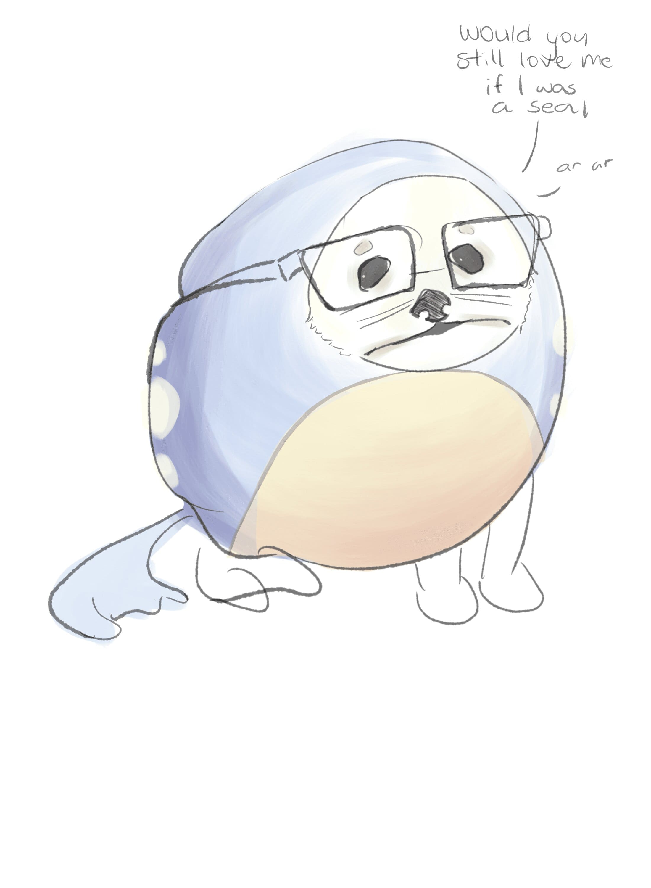
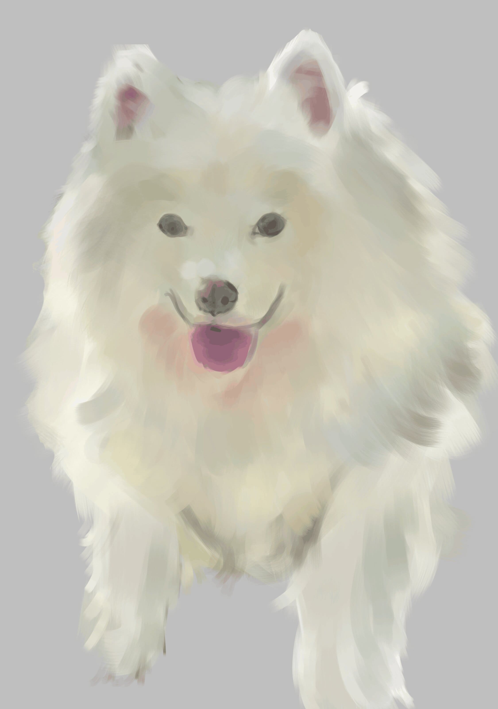
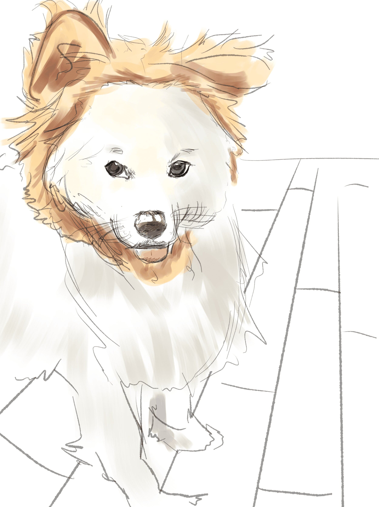
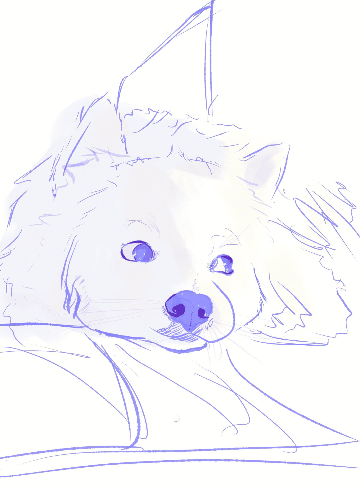
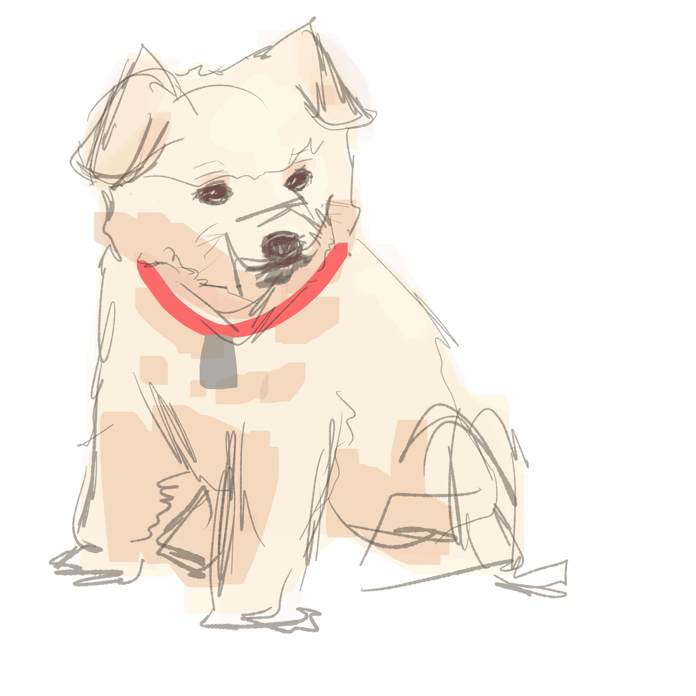

Welcome to the Doggy Art Gallery!
Welcome to my art gallery! Here, I share my illustrations of my beloved dog, Maya. I hope you enjoy exploring my artwork and feel free to reach out if you have any questions or inquiries.
My Gallery
Explore some of my artwork and illustrations.



More of My Artwork
Explore more illustrations of my beloved dog, Maya.
In the Garden
A colourful digital painting of Maya enjoying a peaceful moment surrounded by nature.
More About This Artwork
This illustration captures Maya surrounded by colourful trees and greenery. I wanted to create a peaceful atmosphere using bright colours.
Good Girl Portrait
A portrait of Maya, capturing her playful and curious nature in a full-body digital painting.
More About This Artwork
This illustration captures Maya in a formal setting, highlighting her confident and engaging personality.

Is That a Lion!?
A playful sketch of Maya dressed as a little lion, showing off her fluffy mane and adorable expression.
More About This Artwork
This illustration shows Maya dressed in a playful lion costume. I wanted to capture her expressive face while giving her the appearance of a little lion.

Lazy Days
A soft purple sketch of Maya resting comfortably, capturing her peaceful expression and fluffy features.
More About This Artwork
This sketch captures Maya during a quiet and relaxing moment. I used soft purple lines to emphasize her fluffy appearance and peaceful expression.
Would You Love Me If I Was...
A humorous illustration imagining Maya as a little seal, combining her familiar features with a round, cartoon-like body.
More About This Artwork
This playful illustration imagines Maya as a little seal. I wanted to create something humorous while keeping her recognizable facial features and personality.

Biscuit Pup
A warm-toned sketch of Maya as an adorable little puppy, featuring her fluffy fur, red collar, and playful expression.
More About This Artwork
This illustration features Maya as a small, biscuit-coloured puppy wearing a red collar. I used a loose sketching style to capture her adorable appearance.